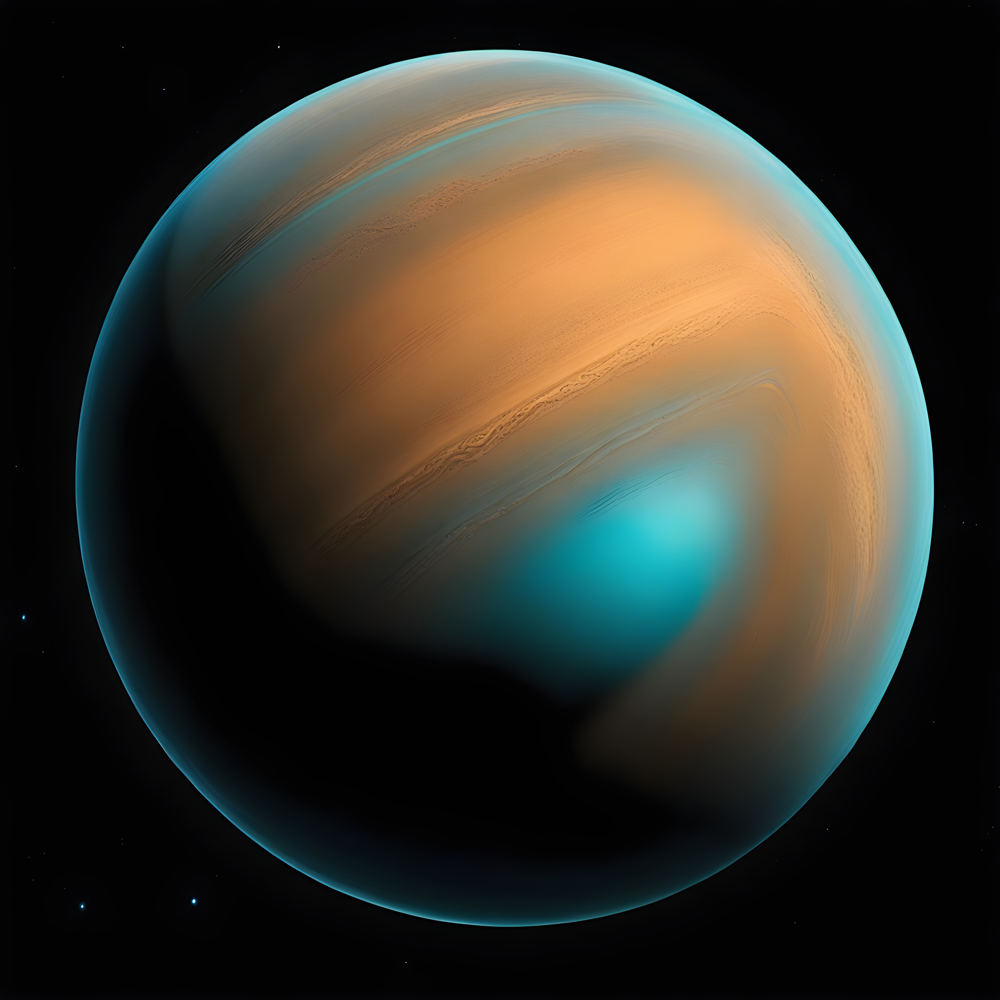

NEPTUNE
Mars is the fourth planet and the furthest terrestrial planet from the Sun. The reddish color of its surface is due to finely grained iron(III) oxide dust in the soil, giving it the nickname "the Red Planet".[21][22] Mars's radius is second smallest among the planets in the Solar System at 3,389.5 km (2,106 mi). The Martian dichotomy is visible on the surface: on average, the terrain on Mars's northern hemisphere is flatter and lower than its southern hemisphere. Mars has a thin atmosphere made primarily of carbon dioxide and two irregularly shaped natural satellites: Phobos and Deimos.
Geologically, Mars is fairly active, with dust devils sweeping across the landscape and marsquakes (Martian analog to earthquakes) trembling underneath the ground. The surface of Mars hosts a large shield volcano (Olympus Mons) and one of the largest canyons in the Solar System (Valles Marineris). Mars's significant orbital eccentricity and axial tilt cause large seasonal changes to the polar ice caps' coverage and temperature swings between −110 °C (−166 °F) to 35 °C (95 °F) on the surface. A Martian solar day (sol) is equal to 24.5 hours and a Martian solar year is equal to 1.88 Earth years.